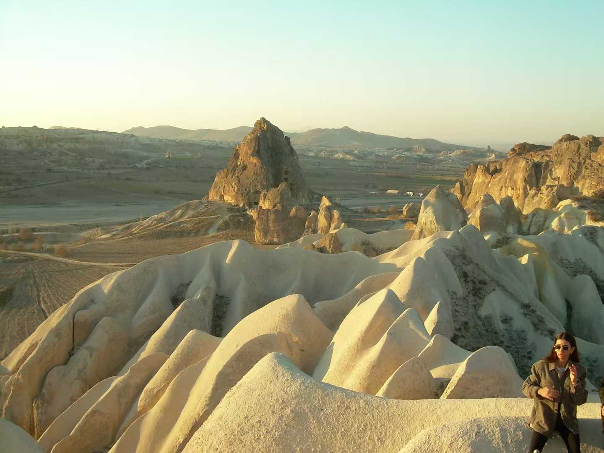
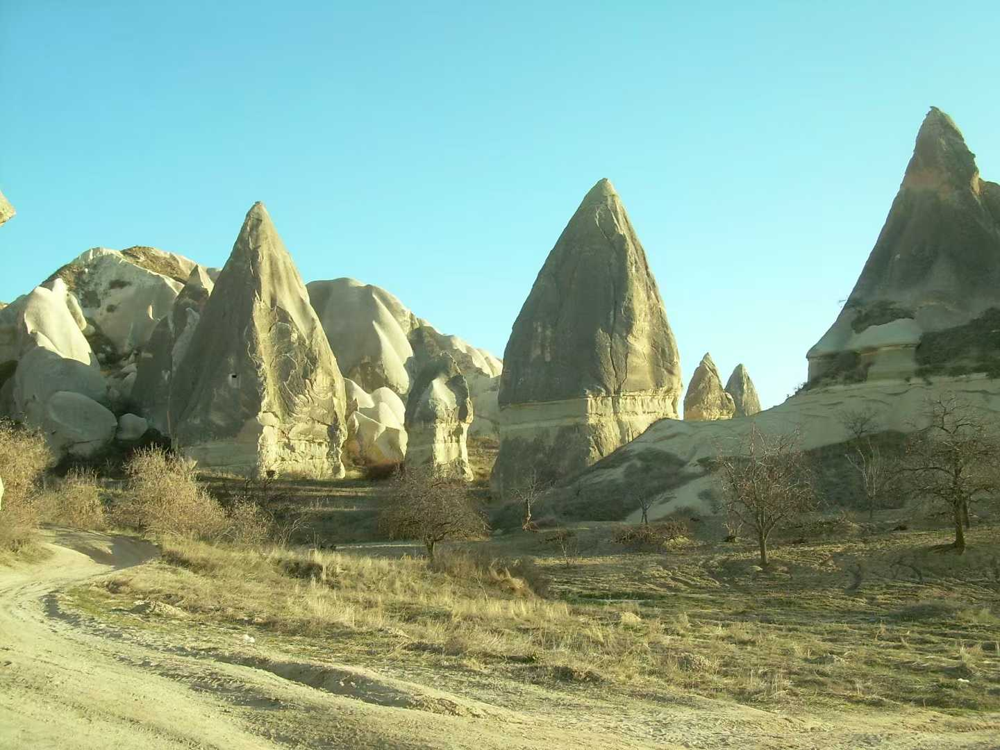
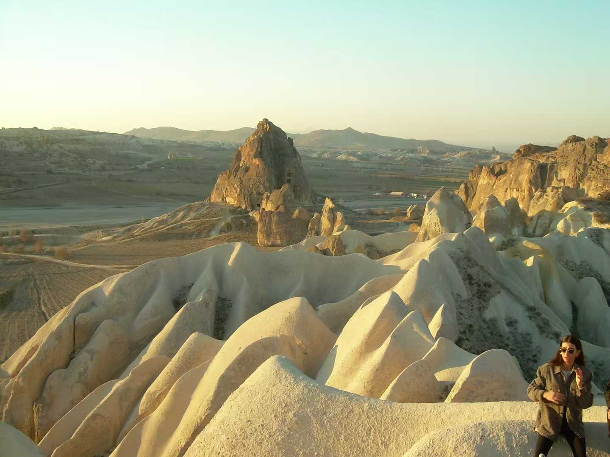
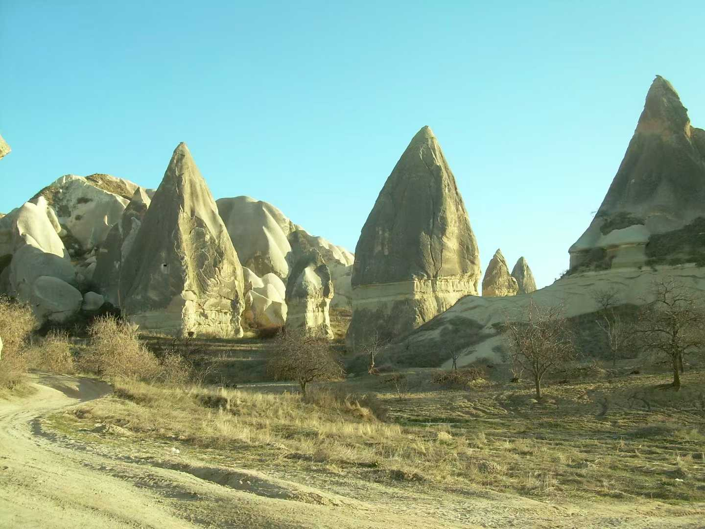

I arrived in Cappadocia early in the morning. The sky was soft and the landscape was strange and beautiful.
 



Some memories felt calm, some felt magical.
This page is not a travel guide. It holds fragments of my personal experience.